The 32 px set: drawn at 32
PHILO Phase 14, lane A0c. The list rows (ObjectList, Needs you, the confirm line, the PR card) showed the 64 px D1 icons scaled to 32, so the pixel art lost pixels. Each kind is now drawn at 32 by PixelLab, from a 2x2 seed of its 64 px icon: same silhouette, same palette, less detail, a 1 px dark outline, a transparent ground.
RULED by Muad'Dib, 2026-10-07: the picks below. Pick by fidelity to the 64 px silhouette, then by legibility on the dark Dock and the light screen. 18 base sprites (the 17 kinds plus
cartridge, which the capability kinds wear).Each cell: the dark desk ground at 1:1 (32 px) and at 2x, then the light steel screen at 1:1. The first column at 1:1 is what a list row showed before; at 2x it is the 64 px icon itself.
| Kind | Beforethe 64 at 32 / the 64 | Seed2x2 box, alpha cut 50% | e1edit, seed 1 | e2edit, seed 2 |
|---|---|---|---|---|
| action-item pick e1. One candidate; the ticket, the checklist and the one ember check all read. | PICK | not drawn | ||
| agent-claude-code pick e2. e1 lost the antenna stem (the knob floats); e2 keeps it and the eye ring is bolder. |  | PICK | ||
| agent-codex pick e1. e1: the cyan eyes are brighter and the mask reads as a face; e2 is taller and flatter. |  | 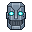 PICK | 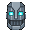 | |
| artifact pick e2. e2: fewer, cleaner text lines and a clear fold; e1 is busier at 1:1. |  | PICK | ||
| cartridge pick e2. e1 garbled the DATA label into false letters; e2 keeps a plain label (no text at 32). | 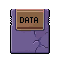 | 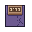 | PICK | |
| conductor-drawer pick e1. e1: the drawer and its handle read; e2 muddies the drawer face. |  | PICK | ||
| decision pick e2. e2: three clean lines and a round seal; e1's lines blur into a grey block. | PICK | |||
| meeting pick e1. e1: dark reels against the steel body read as tape at 1:1; e2's pale reels merge with the body. | 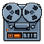 | 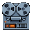 | 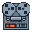 PICK | |
| memory pick e1. e1 keeps the gold pins of the 64; e2 turns them orange-red. |  | 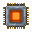 | 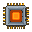 PICK | |
| note pick e1. e1 keeps the 64's angled push pin; e2 makes it a round tack. | 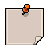 | PICK | ||
| parked-drawer pick e1. One candidate; the dark cabinet and its handle read on both grounds. | PICK | not drawn | ||
| people-ledger pick e1. e1 keeps the ledger's row marks and the tabs; e2 is a plain blue book. |  | 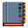 | PICK | |
| person pick e1. One candidate; the clip, the photo and the lines all read. | PICK | not drawn | ||
| project-drawer pick e1. One candidate; two drawers, two ember handles. |  | PICK | not drawn | |
| pull-request pick e2. e1 dropped the paper and kept only the glyph (a second silhouette); e2 keeps the page. |  | PICK | ||
| repository pick e1. One candidate; the crate and the code glyph read. |  | PICK | not drawn | |
| smart-drawer pick e2. e2: a bigger lens with a lit glass over the open drawer; e1's lens is small at 1:1. |  | PICK | ||
| thread pick e1. One candidate; the two bubbles read on both grounds. | PICK | not drawn |